Tile
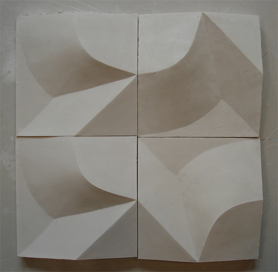The assignment was to make a plaster tile with a three-dimensional patten that could produce at least three very different patterns of four tiles.
I spent a long time investigating the system behind the shapes that would produce most variation when combined in different ways.
In the end I chose a form that is a combination of two different shapes assimetrically placed on the tile.
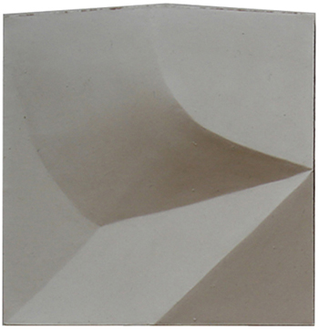 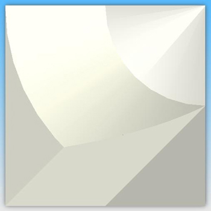 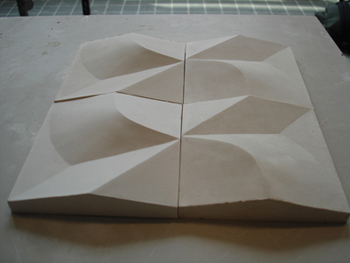 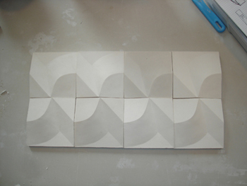 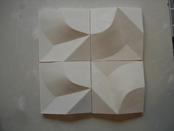 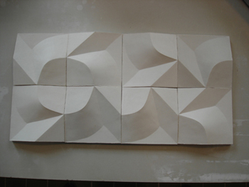 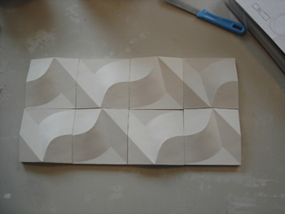 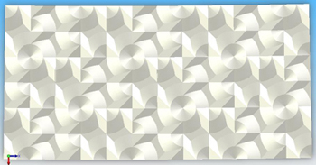 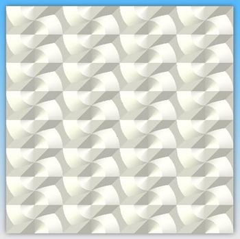 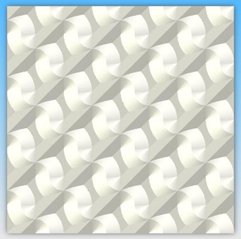 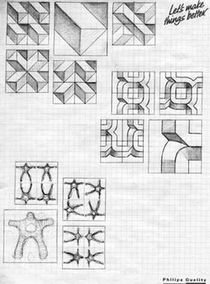 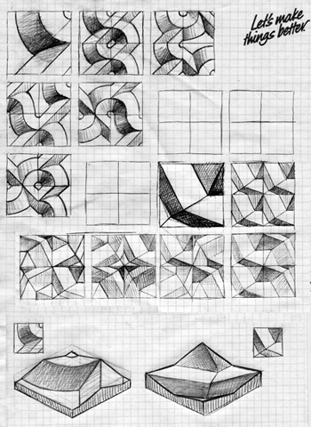 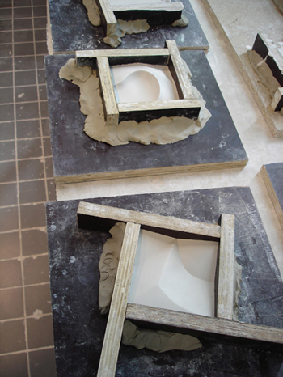